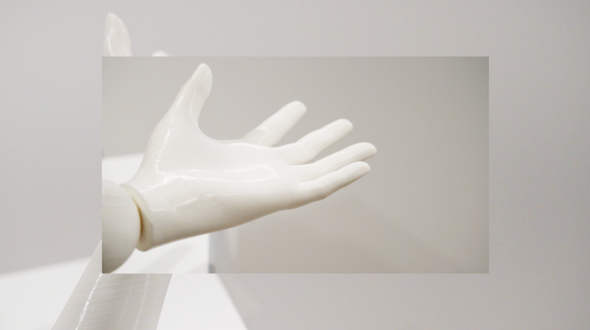

Video from this Vimeo Learn Resource
Detailed Images

This is an interactive installation that allows the viewer experience imbalance and disconnection,
additionally, the fractured interpersonal relationships, the precious but fragile bonds between people are insinuated in the installation.
Video from this Vimeo Learn Resource